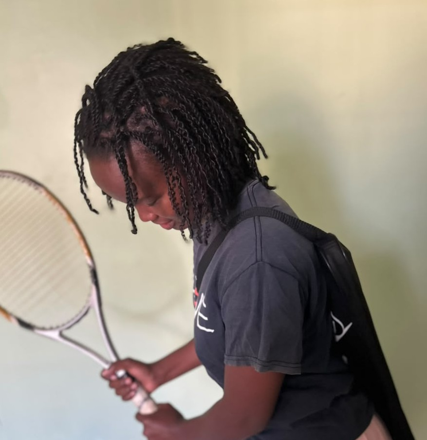
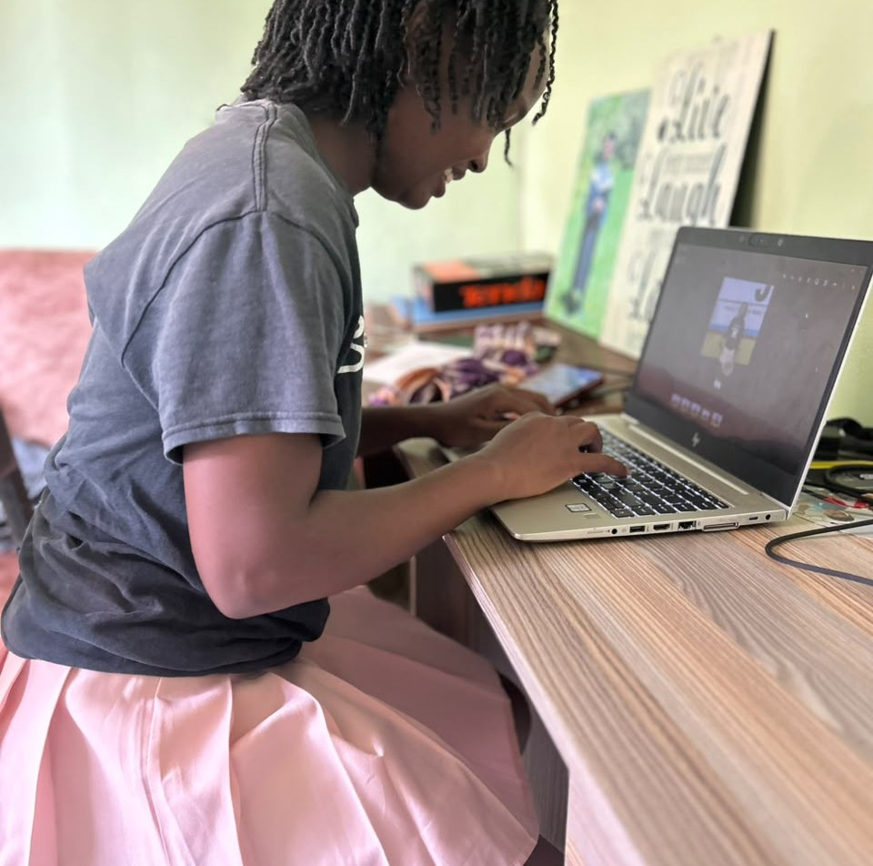

Tennis
I love the fast pace, footwork, and mental focus that tennis demands. Whether practicing serves or playing weekend rallies, it keeps me sharp and energized.
Outside of lectures and lab work, I balance physical energy on the court with quiet storytelling on paper.

I love the fast pace, footwork, and mental focus that tennis demands. Whether practicing serves or playing weekend rallies, it keeps me sharp and energized.

Writing short fiction and reflective essays lets me explore new perspectives and unwind after long study sessions. It also helps sharpen my communication skills.